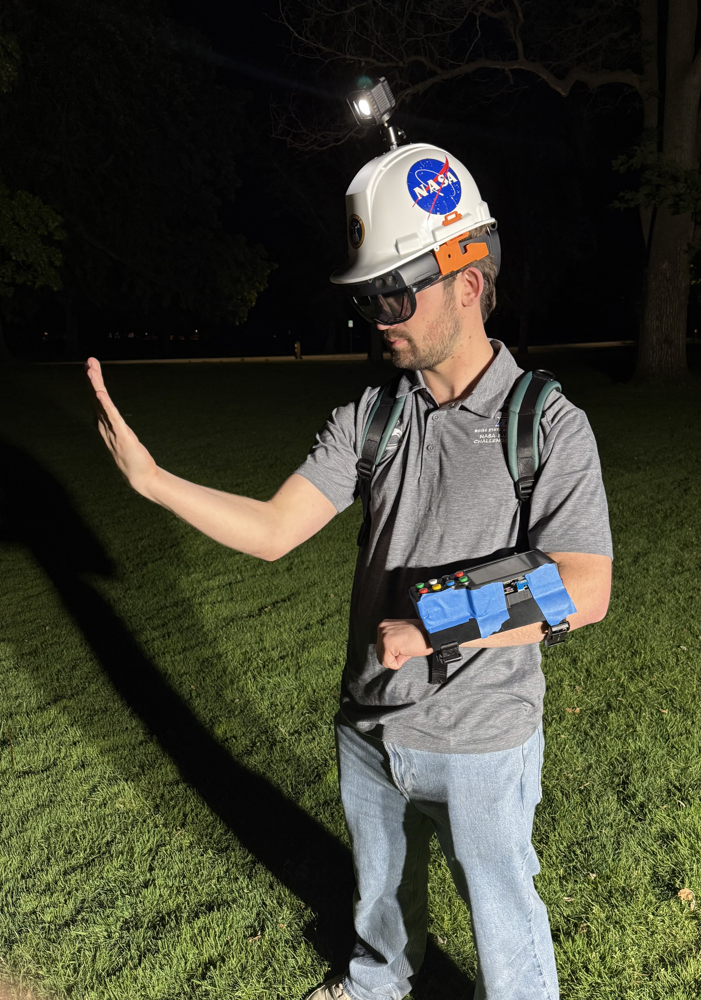
NASA SUITS · 2025–2026
A mixed-reality interface developed for the Boise State University NASA SUITS challenge, designed to support astronaut performance and safety during lunar Extravehicular Activities (EVAs).
ROLE
Human-in-the-Loop testing, usability evaluation, documentation, and UX design support.
TEAM
NASA SUITS 2025–2026 student team working across UX, software, hardware, research, and testing.
TOOLS & TECHNOLOGY
Mixed-reality interface systems, physical controls, user testing, and iterative design.
01 / OVERVIEW
NASA SUITS (Spacesuit User Interface Technologies for Students) is a challenge that asks university students to design and develop technologies that could support astronauts during future Extravehicular Activities (EVAs).
As part of Boise State University's 2025–2026 NASA SUITS team, I contributed to the development and evaluation of CHUCK (Chuck's Holographic User Control Kit), a mixed-reality interface designed to provide astronauts with information and controls while operating in an EVA environment. It was named in honor of a past team member named Chuck Burnell, who passed away in April 2024. Chuck was an essential member of the team, acting as a mentor, leader, and friend.
Unlike a traditional application, CHUCK had to be considered within a physical environment where the user's surroundings, movement, lighting conditions, and available interaction methods could all affect the experience.
My primary responsibilities focused on UX design and Human-in-the-Loop (HITL) testing. I helped evaluate how people interacted with the system, documented usability issues, and communicated findings to the development team as the prototype evolved.
02 / MY ROLE
My role on the team centered around understanding the experience from the user's perspective and evaluating CHUCK as new features were developed.
I contributed to the design and evaluation of the user experience, helping consider how information and controls were presented within the mixed-reality environment.
HITL testing allowed us to observe how users actually interacted with CHUCK rather than relying solely on internal development testing.
03 / THE INTERFACE
CHUCK brought mission information and interaction controls into the user's physical environment through a HoloLens-based mixed-reality interface.
Several systems worked together to help users understand their surroundings, navigate toward destinations, access procedures, and more during an EVA scenario.
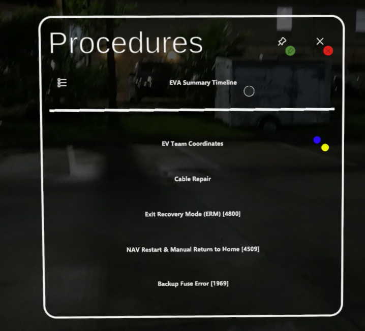
PROCEDURES
The Procedures interface provided users with access to mission and error-handling procedures during EVA tasks. Presenting this information through the mixed-reality interface allowed users to reference important instructions without relying on a traditional external screen.
NAVIGATION
Navigation was another important component of CHUCK. The system incorporated map-based information and directional guidance to help users understand their surroundings and reach mission destinations.
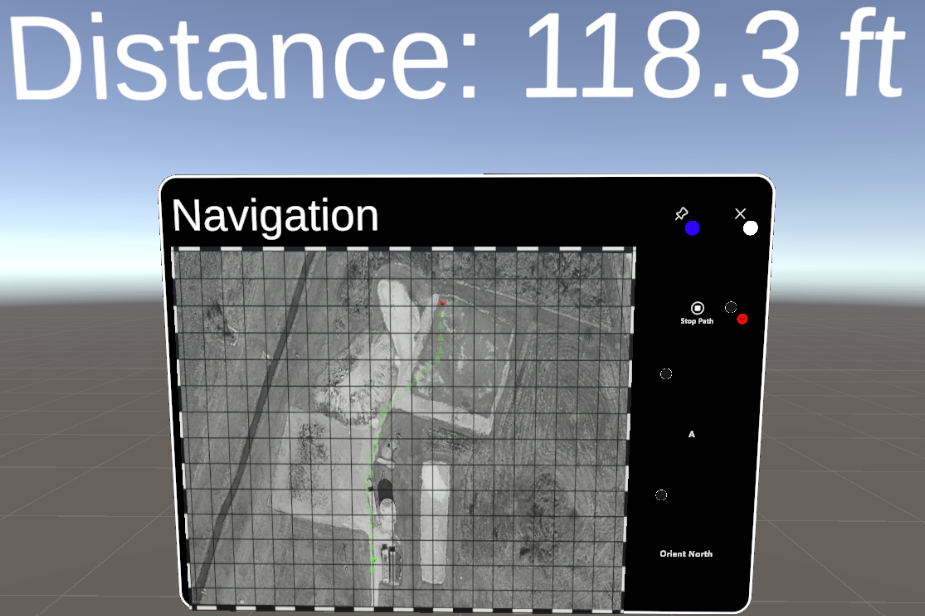
04 / INTERACTION
CHUCK was not limited to a single interaction method. The system incorporated both the HoloLens interface and a physical arm bar, giving users multiple ways to interact with the system.
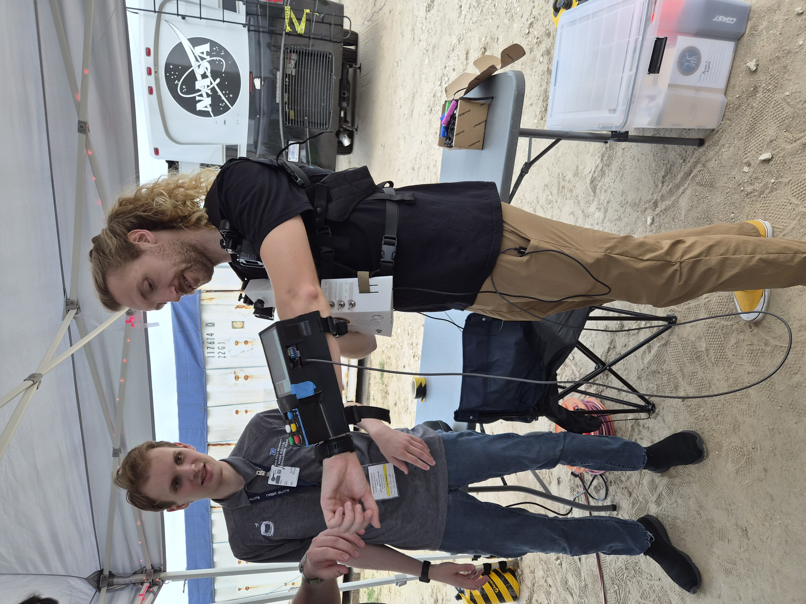
Incorporating a physical control system alongside the mixed-reality interface introduced another layer to the user experience. Evaluating how these interaction methods worked together was an important part of understanding CHUCK as a complete system.
My focus was not on developing the underlying hardware, but on evaluating the experience of interacting with the system as a user.
05 / HUMAN-IN-THE-LOOP TESTING
Human-in-the-Loop testing allowed our team to evaluate CHUCK through direct interaction with users. Rather than testing the interface only in development, we observed how people responded to the system while completing tasks and navigating the environment.
During testing, we observed how the system responded to user interactions and documented the tester's overall experience. These observations helped us identify issues that were difficult to recognize during development alone.
Our first major round of HITL testing took place during the Games, Interactive Media, and Mobile technology (GIMM) Senior Showcase. Students, professionals, and other visitors were able to interact with CHUCK and provide feedback. We later expanded testing through additional sessions at local parks, including testing under different lighting conditions.
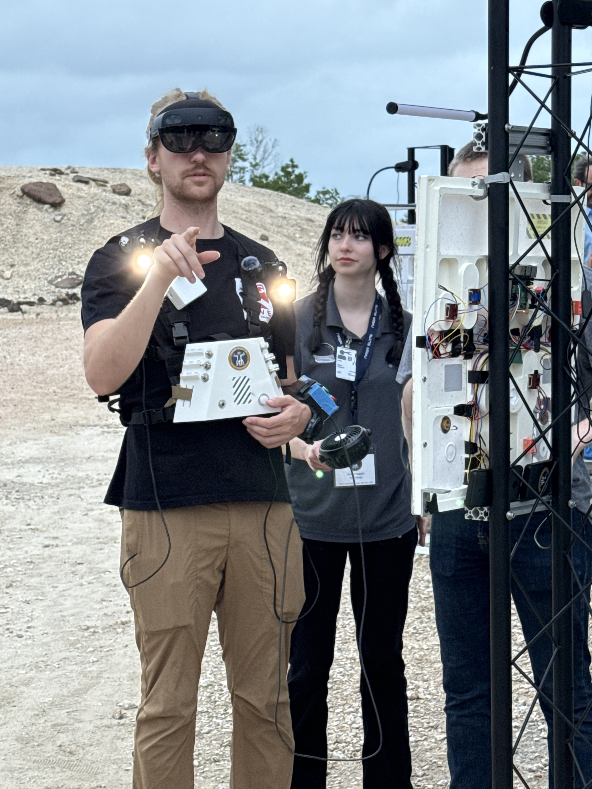
Daytime Human-in-the-Loop testing.
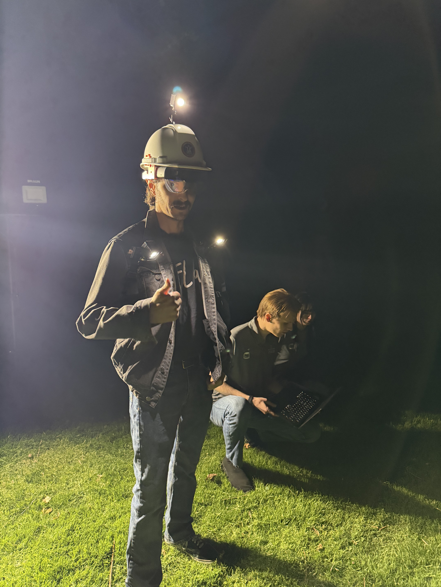
Nighttime testing allowed the team to evaluate the interface under different environmental conditions.
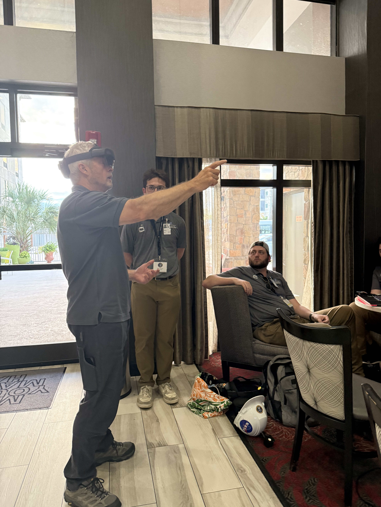
EXPERT FEEDBACK
Our testing also gave us opportunities to demonstrate CHUCK to our advisor, former astronaut Steve Swanson, and observe him interacting with the system.
Having experienced users interact directly with the prototype helped our team think critically about how CHUCK's interface and interactions translated from a development environment into a more realistic EVA context.
06 / HOUSTON
Throughout the project, our team had opportunities to demonstrate, test, and discuss CHUCK beyond the university environment. Traveling to Houston provided another opportunity to work with the broader NASA SUITS community and evaluate our prototype.
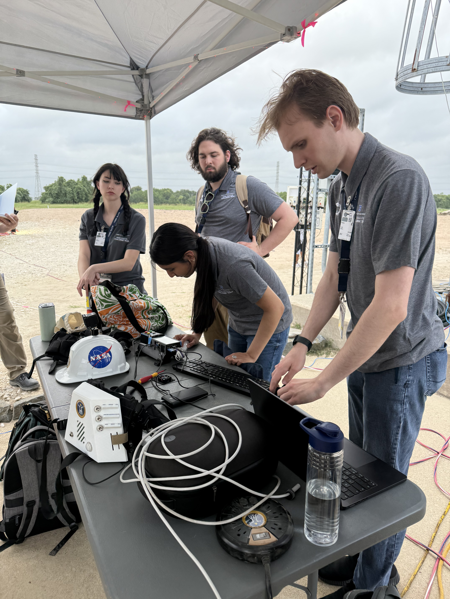
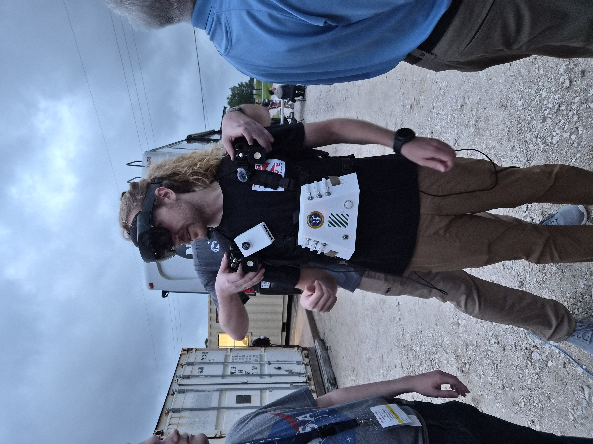
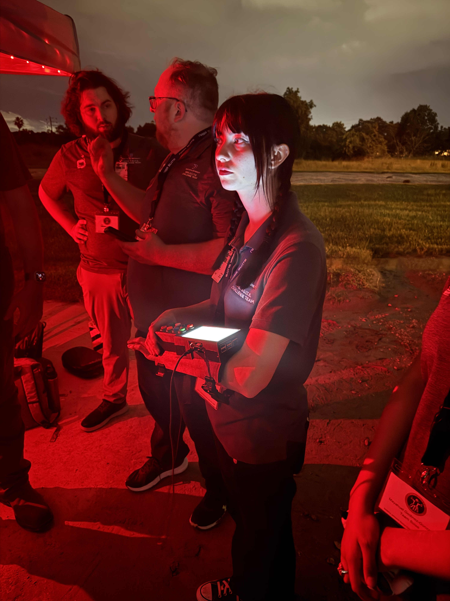
07 / OUTREACH
In addition to formal testing, our team demonstrated CHUCK at several events throughout the project. These opportunities allowed us to introduce the project to a wide range of students, professionals, and community members while gathering additional reactions and feedback.
People
GIMM Senior Showcase
Day
RCON Conference
Day
Space Point Conference
People
VIP Showcase
08 / WHAT WE LEARNED
Testing revealed several usability issues that were not always apparent during development. Documenting these observations gave our team a clearer understanding of how users experienced CHUCK and where the system could be improved.
Testing revealed instances where portions of the interface could flicker under darker lighting conditions.
Some destination indicators could move or behave unpredictably, creating opportunities to improve navigation clarity.
Testing helped identify situations where interface elements did not always remain positioned as predictably as users expected.
Voice interaction did not consistently recognize commands, highlighting another area for refinement.
These findings reinforced the value of testing with people outside of the development process. Observing users interact with the system helped our team identify problems that could otherwise remain hidden and provided actionable feedback for future iterations.
For me, the experience demonstrated how UX research can bridge the gap between what a designer or developer expects a user to do and what the user actually does.
09 / REFLECTION
Working on NASA SUITS gave me the opportunity to apply UX principles in an environment very different from the traditional applications I had previously worked on.
Designing and evaluating a mixed-reality interface introduced challenges that required thinking about more than just what an interface looks like. The user's physical surroundings, movement, interaction methods, and environmental conditions all became part of the experience.
Most importantly, the project strengthened my interest in UX research, usability testing, and designing experiences around the needs of real users. Conducting Human-in-the- Loop testing showed me how valuable it is to observe people directly and use those observations to guide design decisions.
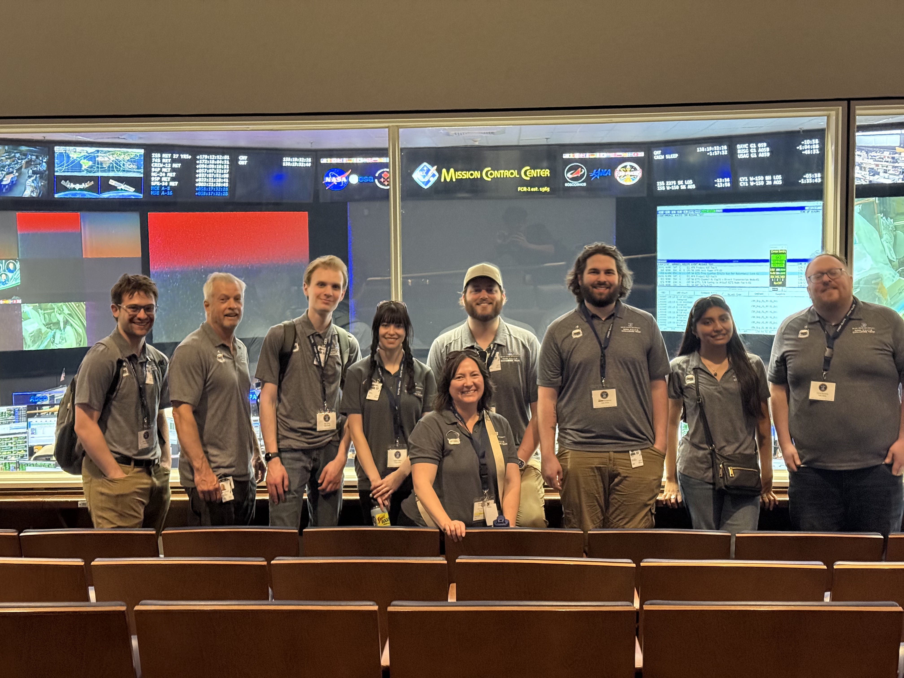
Boise State University's NASA SUITS 2025–2026 team at Mission Control in Houston.
THE RESULT
CHUCK represented a year of collaborative design, development, testing, and iteration. Being able to see the system progress from an early prototype into something that could be demonstrated and tested with real users was one of the most rewarding parts of the experience.
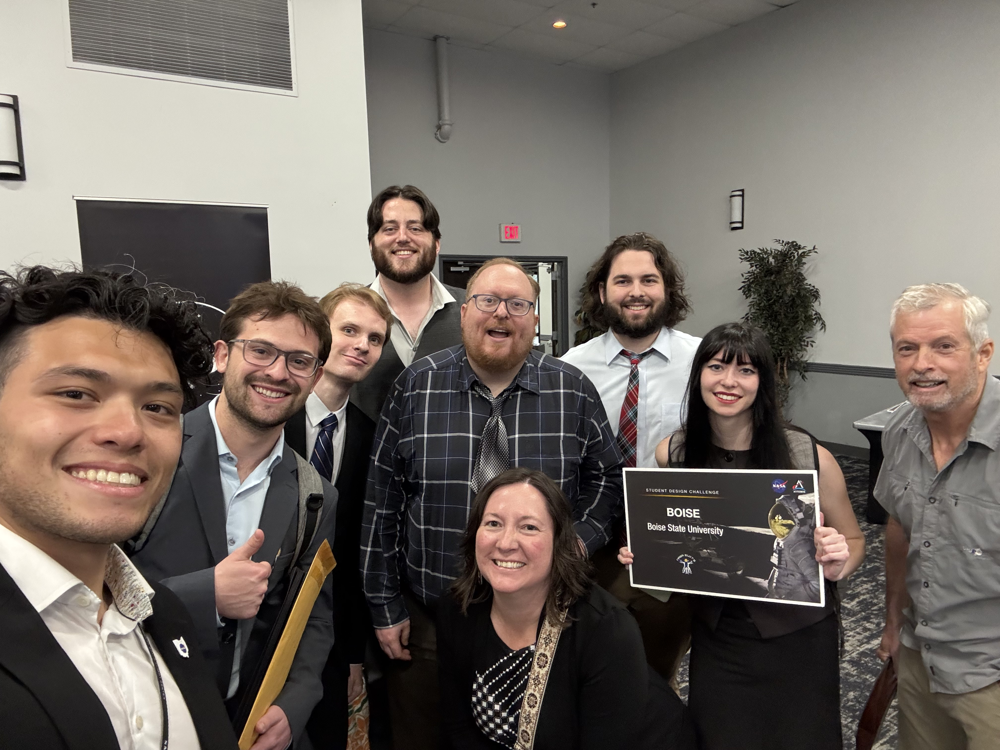